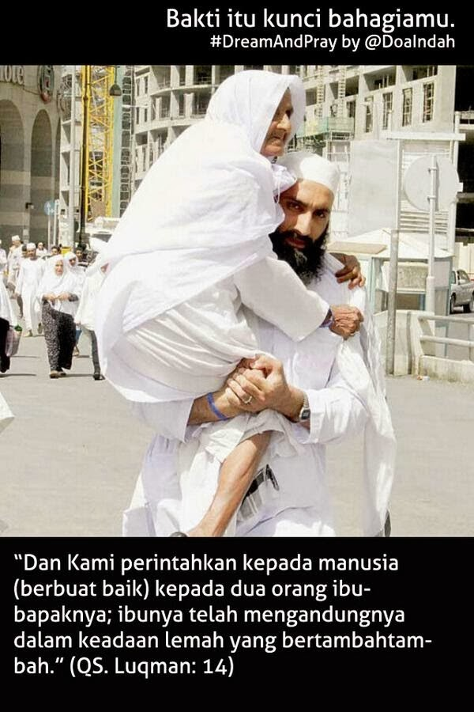

{kind=link}
Syukurilah apa yang ada, bukan apa yang akan ada, carilah apa yg buatmu bahagia, bukan yang mungkin buatmu bahagia
{kind=link}
Mengeluh merupakan suatu hal yang sering orang lakukan bahkan kitapun pernah mengeluh juga, mengeluh merupakan suatu hal yang tidak baik, dan tanpa kita sadari dengan mengeluh berarti kita tidak mensyukuri nikmat yang Allah berikan kepada diri kita. Hal yang terbaik adalah senantiasa ridha atas ketetapanNya, dan berbuat yang terbaik untuk mendapatkan keridhaanNya.
![Saudaraku selagi masih ada waktu jenguklah mereka, dengarkan keluh kesah mereka sebagaimana apa yang mereka rasakan orang-orang seumuran mereka....Temanilah waktu-waktu sepinya dengan segala kasih sayangmu sebagaimana mereka menyayangimu sewaktu kamu masih kecil.Saudaraku.....selagi masih ada kesempatan..BERBAKTILAH.jikalau saat ini kedua orang tua kita telah tiada...DOAkanlah selalu mereka. Saudaraku .... sebelum penyesalan itu datang sayangilah kedua orang tua kita. Semoga Allah Azza Wa Jalla meridhoi niat ini...Amiin](images/fulls/03.jpg){kind=link}
Saudaraku selagi masih ada waktu jenguklah mereka, dengarkan keluh kesah mereka sebagaimana apa yang mereka rasakan orang-orang seumuran mereka....Temanilah waktu-waktu sepinya dengan segala kasih sayangmu sebagaimana mereka menyayangimu sewaktu kamu masih kecil.Saudaraku.....selagi masih ada kesempatan..BERBAKTILAH.jikalau saat ini kedua orang tua kita telah tiada...DOAkanlah selalu mereka. Saudaraku .... sebelum penyesalan itu datang sayangilah kedua orang tua kita. Semoga Allah Azza Wa Jalla meridhoi niat ini...Amiin
![“Kami perintahkan kepada manusia supaya berbuat baik kepada dua orang ibu bapaknya, ibunya mengandungnya dengan susah payah, dan melahirkannya dengan susah payah (pula). Mengandungnya sampai menyapihnya adalah tiga puluh bulan, sehingga apabila dia telah dewasa dan umurnya sampai empat puluh tahun ia berdo’a: “Ya Tuhanku, tunjukilah aku untuk mensyukuri ni’mat Engkau yang telah Engkau berikan kepadaku dan kepada ibu bapakku dan supaya aku dapat berbuat amal yang saleh yang Engkau ridhai. berilah kebaikan kepadaku dengan (memberi kebaikan) kepada anak cucuku. Sesungguhnya aku bertaubat kepada Engkau dan sesungguhnya aku termasuk orang-orang yang berserah diri.” (Qs. Al-Ahqaaf : 15)](images/fulls/04.jpg){kind=link}
“Kami perintahkan kepada manusia supaya berbuat baik kepada dua orang ibu bapaknya, ibunya mengandungnya dengan susah payah, dan melahirkannya dengan susah payah (pula). Mengandungnya sampai menyapihnya adalah tiga puluh bulan, sehingga apabila dia telah dewasa dan umurnya sampai empat puluh tahun ia berdo’a: “Ya Tuhanku, tunjukilah aku untuk mensyukuri ni’mat Engkau yang telah Engkau berikan kepadaku dan kepada ibu bapakku dan supaya aku dapat berbuat amal yang saleh yang Engkau ridhai. berilah kebaikan kepadaku dengan (memberi kebaikan) kepada anak cucuku. Sesungguhnya aku bertaubat kepada Engkau dan sesungguhnya aku termasuk orang-orang yang berserah diri.” (Qs. Al-Ahqaaf : 15)
![Seorang laki-laki datang kepada Rasulullah shallallahu ‘alaihi wasallam lalu berkata “Saya berbai’at kepadamu untuk berhijrah dan berjihad, aku mengharapkan pahala dari Allah.” Beliau bertanya, “Apakah salah satu orang tuamu masih hidup?” Ia menjawab, “Ya, bahkan keduanya masih hidup.” Rasulullah bertanya lagi, “Maka apakah kamu masih akan mencari pahala dari Allah?” Ia menjawab, “Ya.” Maka beliau pun bersabda, “Pulanglah kepada kedua orang tuamu lalu berbuat baiklah dalam mempergauli mereka.” (HR. Muslim)](images/fulls/05.jpeg){kind=link}
Seorang laki-laki datang kepada Rasulullah shallallahu ‘alaihi wasallam lalu berkata “Saya berbai’at kepadamu untuk berhijrah dan berjihad, aku mengharapkan pahala dari Allah.” Beliau bertanya, “Apakah salah satu orang tuamu masih hidup?” Ia menjawab, “Ya, bahkan keduanya masih hidup.” Rasulullah bertanya lagi, “Maka apakah kamu masih akan mencari pahala dari Allah?” Ia menjawab, “Ya.” Maka beliau pun bersabda, “Pulanglah kepada kedua orang tuamu lalu berbuat baiklah dalam mempergauli mereka.” (HR. Muslim)
{kind=link}
"Orang tua adalah 'PINTU PERTENGAHAN' menuju SYURGA.Bila engkau mau, silakan engkau pelihara.Bila tidak mau silalah untuk tidak memperdulikannya."(Diriwayatkan oleh At-Tirmidzi dan beliau bersabda."Hadits ini shahih.Riwayat ini juga dinyatakan sahih oleh Al-Albani,semoga Allah memberikan rahmat kepada beliau)Menurut para ulama,arti 'PINTU PERTENGAHAN' yakni pintu terbaik..
{kind=link}
Anak adalah anugerah yang diberikan Allah Ta’ala kepada orang tua. Kehadirannya selalu didambakan oleh dua insan yang mulai menjalani bahtera rumah tangga. Kehadirannya menjadi penyempurna kebahagiaan yang mulai tercipta. Tangisnya menjadikan gelisah hati ayah dan ibu yang mendengarkannya. Tawanya menjadi pelipur hati kedua orang tuanya yang tengah berduka. Bahkan adanya dirinya menjadi penyejuk pandangan dan menimbulkan kegemasan bagi siapa saja yang memandangnya.

Dan Tuhanmu telah memerintahkan supaya kamu jangan menyembah selain Dia dan hendaklah kamu berbuat baik pada ibu bapakmu dengan sebaik-baiknya. Jika salah seorang di antara keduanya atau kedua-duanya sampai berumur lanjut dalam pemeliharaanmu, maka sekali-kali janganlah kamu mengatakan kepada keduanya perkataan "ah" dan janganlah kamu membentak mereka dan ucapkanlah kepada mereka perkataan yang mulia.
{kind=link}
Orang tua adalah pintu surga paling tengah. Kalian bisa sia-siakan pintu itu, atau kalian bisa menjaganya. (HR. Ahmad 28276, Turmudzi 2022, Ibn Majah 3794, dan dihasankan Syuaib al-Arnauth).
{kind=link}
Engkau kenyang dalam keadaan dia lapar.Engkau puas minum dalam keadaan dia kehausan.Engkau mendahulukan berbuat baik kepada istri dan anakmu dari pada ibumu.Engkau lupakan semua kebaikan yang pernah dia perbuat.

{kind=link}
{kind=link}